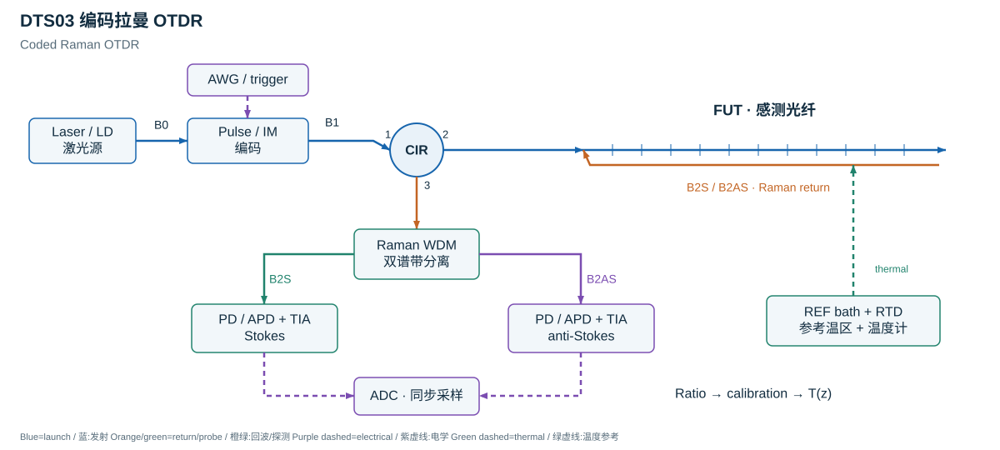
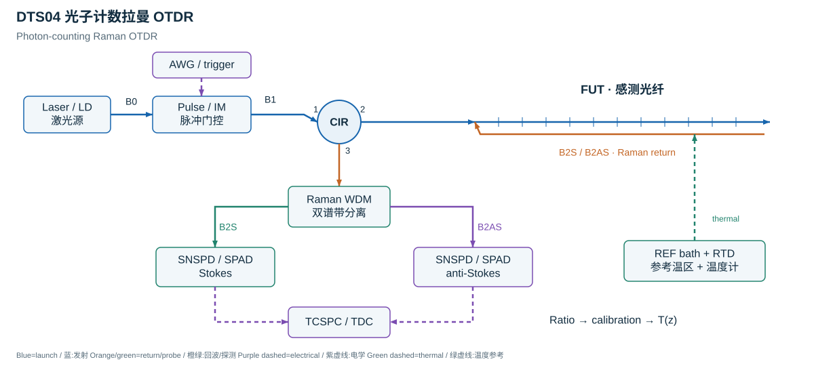

测量对象输出沿光纤的温度分布 T(z,t)。空间坐标是光纤距离，映射到井深或结构位置需要独立安装记录。The temperature distribution T(z,t) along the fiber. Mapping fiber distance to well depth or structural position needs installation records.
常见实现拉曼 DTS 比较 Stokes 与 anti-Stokes 强度。二者的温度响应不同，经增益、背景和差分衰减校正后转换为温度。Raman DTS compares Stokes and anti-Stokes intensities, then calibrates gains, background, and differential attenuation.
其他测温路线布里渊 BFS 与瑞利谱移也对温度敏感，但同时对光纤应变敏感；测温时必须控制或独立测量应变。Brillouin BFS and Rayleigh spectral shifts respond to temperature and fiber strain; thermometry requires known or independently measured strain.
标定与误差参考温度区、局部熔接/弯曲损耗、热平衡和时间同步，是可靠测温的一部分。Reference temperature sections, local splice/bend losses, thermal equilibrium, and timing alignment are part of reliable thermometry.
02测量过程：从光到结果
发射脉冲或扫频光
温度相关散射
接收两谱带或频谱
比值或谱移计算
标定为 T(z,t)
03代表性实现方式
每一种方式分别说明测量机制、直接观测与适用条件。光路示意和关键公式可按需展开。
01单端拉曼 OTDR
工作方式从一端发射脉冲、接收两条拉曼谱带；用参考温度区与差分衰减校正获得沿纤温度。Launch and receive from one end; calibrate the Raman ratio using known-temperature references and differential attenuation.
直接观测Stokes / anti-Stokes 强度比Stokes / anti-Stokes intensity ratio
适用条件与局限熔接、弯曲及连接器会产生局部差分损耗；单端标定的损耗模型不能自动覆盖所有变化。Splices, bends, and connectors create local differential losses; a single-ended loss model cannot automatically cover every change.
脉冲包络 a(t) 发射到光纤。往返时间定位 z；ng 是群折射率，t0 是系统延迟。The launched pulse envelope a(t) defines the interrogation. Round-trip delay gives z; ng is the group index and t0 the system delay.
n_R=\frac1{e^{\gamma/T}-1} 是声子占据数；\gamma=\frac{h\Delta\nu_R}{k_B}，单位 K。A 包括相应通道的累计损耗。n_R=\frac1{e^{\gamma/T}-1} is the phonon occupation; \gamma=\frac{h\Delta\nu_R}{k_B} in kelvin. A includes the cumulative channel loss.
A_\Delta(z)=\int_0^z[\alpha_{\mathrm{AS}}(s)-\alpha_{\mathrm S}(s)]\,\mathrm ds。这里采用 Hausner 的标定符号；C 吸收通道效率差，必须由已知温度区标定。A_\Delta(z)=\int_0^z[\alpha_{\mathrm{AS}}(s)-\alpha_{\mathrm S}(s)]\,\mathrm ds. This is the Hausner calibration convention; C absorbs channel-efficiency differences and needs known-temperature references.
脉宽尺度与采样点间距不同；实际空间响应还受探测器带宽、滤波和编码影响。弱 anti-Stokes 通道通常主导温度不确定性。Pulse scale differs from sample spacing. Detector bandwidth, filtering, and coding also affect spatial response. Weak anti-Stokes returns often dominate temperature uncertainty.
工作方式光纤两端接入光开关，交替从 A、B 两端测量；先统一物理坐标，再联合标定。Connect both ends through an optical switch and interrogate alternately; map both traces to the same physical coordinate before joint calibration.
直接观测双向强度比与差分衰减Forward/reverse ratios and differential attenuation
适用条件与局限需要两端可达及稳定的双向坐标映射；两端交替测量的时间错位对快速过程尤其重要。Both ends must be accessible and spatially aligned; interleaved acquisitions can alias rapid thermal changes.
脉冲包络 a(t) 发射到光纤。往返时间定位 z；ng 是群折射率，t0 是系统延迟。The launched pulse envelope a(t) defines the interrogation. Round-trip delay gives z; ng is the group index and t0 the system delay.
n_R=\frac1{e^{\gamma/T}-1} 是声子占据数；\gamma=\frac{h\Delta\nu_R}{k_B}，单位 K。A 包括相应通道的累计损耗。n_R=\frac1{e^{\gamma/T}-1} is the phonon occupation; \gamma=\frac{h\Delta\nu_R}{k_B} in kelvin. A includes the cumulative channel loss.
B 端迹线需要反转到 A 端的 z 坐标；两端时延零点和有效纤长 L 分别标定。Reverse the B-end trace into the A-end coordinate; calibrate both delay origins and the effective fiber length L.
若传递互易、两端增益已校准且温度在轮询间稳定，则两式平均得到 \frac\gamma T+\frac{A_\Delta(0,L)}2；仍需参考温度区确定常数。For reciprocal transfer, calibrated end gains, and temperature stable during switching, averaging yields \frac\gamma T+\frac{A_\Delta(0,L)}2; reference temperatures are still needed.
适用条件与局限编码增益依赖码长、噪声、脉冲非线性与解码条件；不能把码长直接当作空间分辨率或保证的信噪比提升。Coding benefit depends on code length, noise, pulse nonlinearity, and decoder conditions; code length does not itself set spatial resolution or guarantee SNR gain.
代表性光路与完整公式

概念示意，非按比例、非实测数据。
a → c · 编码发射 / Coded launch
a(t)=\sum_k c_k p(t-kT_c)
ck 是实际非负发射码；双极性数学码需通过互补或分组采集实现，不能直接发射负光功率。ck is a realizable non-negative optical code. Bipolar mathematical codes require complementary/grouped acquisitions; negative optical power is impossible.
C 是由实际发射序列构造的编码矩阵；两通道共享时序，但噪声和增益不同。C is the matrix of actual launched codes; the two channels share timing but have different noise and gains.
y → h · 解码 / Decode
\widehat{\mathbf h}_j=\mathbf D\mathbf y_j,\qquad\mathbf D\mathbf C\simeq\mathbf I
D 是匹配码族的解码算子；先解码两条通道，再扣背景、求比值和标定温度。D is the decoder for the selected code family. Decode both channels before background subtraction, ratio formation, and thermometry.
A_\Delta(z)=\int_0^z[\alpha_{\mathrm{AS}}(s)-\alpha_{\mathrm S}(s)]\,\mathrm ds。这里采用 Hausner 的标定符号；C 吸收通道效率差，必须由已知温度区标定。A_\Delta(z)=\int_0^z[\alpha_{\mathrm{AS}}(s)-\alpha_{\mathrm S}(s)]\,\mathrm ds. This is the Hausner calibration convention; C absorbs channel-efficiency differences and needs known-temperature references.
脉宽尺度与采样点间距不同；实际空间响应还受探测器带宽、滤波和编码影响。弱 anti-Stokes 通道通常主导温度不确定性。Pulse scale differs from sample spacing. Detector bandwidth, filtering, and coding also affect spatial response. Weak anti-Stokes returns often dominate temperature uncertainty.
适用条件与局限SNSPD 与 SPAD 不是同一器件；示意图以单光子接收功能为概括，引用实例采用需要低温系统的 SNSPD。SNSPD and SPAD are different detectors. The functional schematic represents single-photon reception; the cited experiment used cryogenic SNSPDs.
代表性光路与完整公式

概念示意，非按比例、非实测数据。
发射 → 计数 / Launch to counts
N_{\mathrm S}(z),\ N_{\mathrm{AS}}(z)\quad\text{counts in calibrated delay bins}
以同步触发建立到达时间直方图；先扣暗计数与背景。时间箱宽是采样间距，不自动等于分辨率。Build delay histograms against the launch trigger; subtract dark/background counts. Bin width sets sampling, not automatically spatial resolution.
ηj 包括光路透过率与探测效率，tm 是累计时间；需在线性低计数区使用，检查死时间与堆积。ηj includes optical throughput and detector efficiency; tm is integration time. Operate in the low-count linear regime and check dead time and pile-up.
A_\Delta(z)=\int_0^z[\alpha_{\mathrm{AS}}(s)-\alpha_{\mathrm S}(s)]\,\mathrm ds。这里采用 Hausner 的标定符号；C 吸收通道效率差，必须由已知温度区标定。A_\Delta(z)=\int_0^z[\alpha_{\mathrm{AS}}(s)-\alpha_{\mathrm S}(s)]\,\mathrm ds. This is the Hausner calibration convention; C absorbs channel-efficiency differences and needs known-temperature references.
仅适用于独立泊松计数、背景可忽略、标定参数固定。实际还需传播背景、效率及损耗标定误差。Applies only to independent Poisson counts, negligible background, and fixed calibration. Real uncertainty also includes background, efficiency, and attenuation calibration.
脉宽尺度与直方图箱间距不同；实际响应还受探测器抖动、光纤色散和计数处理影响。Pulse scale differs from histogram bin spacing. Detector jitter, fiber dispersion, and counting processing also affect the response.
工作方式通过泵浦-探测频差扫描获得局部增益谱；在应变已知或隔离时反演温度。Scan pump-probe detuning to obtain local gain spectra; infer temperature only when strain is known or isolated.
直接观测局部布里渊频移 BFSLocal Brillouin frequency shift
适用条件与局限BFS 同时对温度与应变敏感；松套管不能保证所有工况下完全无应变。还须校准实际光缆热响应。BFS responds to temperature and strain. A loose tube does not guarantee zero strain under every condition; actual cable thermal response needs calibration.
同源泵浦与探测支路分开。探测光经单边带调制及选边带滤波，下移到 \nu_s=\nu_p-\Delta\nu；两束在光纤中反向传播。Pump and probe are derived from the same source. Single-sideband modulation and sideband selection create \nu_s=\nu_p-\Delta\nu; the waves counter-propagate.
弱增益、近稳态条件下用洛伦兹线型拟合局部谱。强泵浦耗尽、脉冲瞬态及谱重叠会破坏简化模型。Fit a local Lorentzian in the weak-gain, near-steady regime. Pump depletion, pulse transients, and overlapping spectra can invalidate this approximation.
按触发时延定位，并扫描泵浦与探测频差 Δν；每个 z 拟合 Brillouin frequency shift，简称 BFS。Locate by trigger delay and scan the pump-probe detuning Δν. Fit the Brillouin frequency shift (BFS) at each position.
ΔνB · 温度与应变 / Cross-sensitivity
\Delta\nu_B=C_\varepsilon\Delta\varepsilon_{\mathrm{fiber}}+C_T\Delta T
相对于参考状态的小变化模型。C_\varepsilon 的单位为 Hz/单位应变（或 MHz/με），C_T 为 Hz/K；不能混用单位或把单一频移当作两个未知量。A small-change model relative to a reference. C_\varepsilon is in Hz per unit strain (or MHz/με), C_T in Hz/K. One shift cannot identify two unknowns.
应变测量需要独立温度信息；测温需要已知或隔离的光纤应变。光缆热膨胀与约束会改变有效标定。Strain sensing requires independent temperature information; thermometry requires known or isolated fiber strain. Cable expansion and constraint alter the effective calibration.
工作方式用扫频干涉和局部瑞利指纹相关测量温度变化；已知参考温度及应变后才可恢复温度。Use swept interferometry and local fingerprint correlation for temperature change; known reference temperature and strain are needed to recover temperature.
直接观测相对参考状态的局部谱移Local spectral shift relative to a reference
适用条件与局限不是免标定的绝对温度计；大谱移、相干衰落和扫频期间状态变化会使相关失效。This is not calibration-free absolute thermometry. Large shifts, fading, and state changes during a sweep can defeat correlation.
扫频光分为测量与参考支路；辅助不等臂 MZI 提供扫频时钟。κ 为实际光频扫描速率。Split the swept source into measurement and reference branches. An auxiliary unequal-arm MZI supplies the sweep clock; κ is the actual optical-frequency sweep rate.
回波与参考光相干混频。τrel 是相对参考支路的延迟，需要零点标定，不能默认全部距离从光源开始。Mix the return with the reference. τrel is the delay relative to that arm; calibrate the distance origin rather than assuming it begins at the laser.
按实际光频重采样后作傅里叶变换。Bν 是光频扫描带宽；上述理想分辨率不等于应变标距。Resample on the measured optical-frequency grid before Fourier transformation. Bν is the optical scan bandwidth; ideal reflectometric resolution differs from the strain gauge length.
在相同窗口内比较参考与当前瑞利指纹；δν 是当前谱相对参考的有符号光频移。通常拉伸导致红移 \delta\nu<0，因此 q>0；须按实际相关实现核对符号。Compare reference and current Rayleigh fingerprints in matching windows. δν is the signed current-minus-reference optical-frequency shift. Tension usually gives a red shift \delta\nu<0, hence q>0; verify the sign in the actual correlation implementation.
q → Δε / ΔT · 解耦 / Compensation
q=K_\varepsilon\Delta\varepsilon_{\mathrm{fiber}}+K_T\Delta T
K_\varepsilon、K_T 按此符号约定实测标定；普通硅纤中通常为正。温度和应变同时变化时需第二个独立观测。Calibrate K_\varepsilon and K_T under this sign convention; they are usually positive for ordinary silica fiber. Simultaneous temperature and strain changes require a second independent observation.
光源与发射控制激光器提供光；调制器产生脉冲、频移或扫频；驱动与偏置控制决定实际发射波形。Lasers supply light; modulators create pulses, shifts, or sweeps. Drivers and bias controls shape the actual launch.
光路与光纤耦合器分光或混频，环形器区分发射与回波，光纤提供分布式散射；光学滤波按谱带选型。Couplers split/mix, circulators route launch/return, and fiber provides distributed scattering. Select filters by optical band.
接收与采集探测器把光信号转为电信号，采集卡或时间标记器记录信号；带宽、增益和同步均需校准。Detectors convert light to electrical signals, recorded by digitizers or time taggers. Calibrate bandwidth, gain, and timing.
处理与标定上位机完成比值、谱拟合或相关解调，再用参考温度、应变灵敏度和安装信息赋予物理量。Compute ratios, fits, or correlations, then calibrate with reference temperatures, strain sensitivities, and installation information.
空间尺度空间分辨率、应变标距与输出采样间距分别定义；密集输出点不代表更高的真实分辨率。Resolution, gauge length, and output sample spacing are distinct; dense samples do not establish finer true resolution.
交叉敏感温度、应变与机械耦合可能同时影响读数。先确认仪器的直接观测，再讨论目标物理过程。Temperature, strain, and coupling can affect readings together. Establish the instrument observable before interpreting the target process.
验证层次这些光路与关系式用于原理说明；代数校验不等于仪器性能验证，也不等于现场解释成立。These paths and relations teach principles; algebra checks are not instrument-performance or field-interpretation validation.